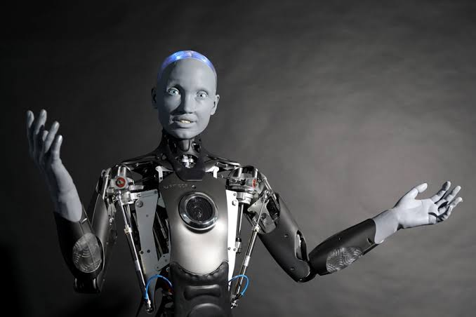
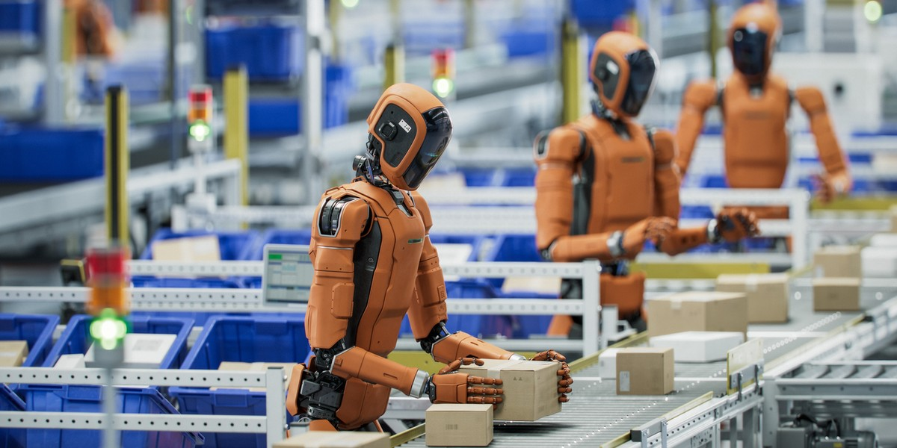

Co to sa roboty
Robot – maszyna, w szczególności system komputerowy, w którym program steruje peryferiami w celu wykonania określonego zadania.
Według oryginalnego znaczenia terminu, robot jest kontrolowany przez sztuczną inteligencję (lub wręcz z nią tożsamy), przy czym obecnie to pojęcie używane jest także dla urządzeń kontrolowanych przez algorytmy lub człowieka.
W najszerszym znaczeniu robotem nazywa się dowolny program komputerowy automatyzujący pewne zadania. Roboty często zastępują człowieka przy monotonnych, złożonych z powtarzających się kroków czynnościach, które mogą wykonywać znacznie szybciej od ludzi.
Domeną robotów mechatronicznych są też te zadania, które są niebezpieczne dla człowieka, na przykład związane z manipulacją szkodliwymi dla zdrowia substancjami lub przebywaniem w nieprzyjaznym środowisku.

Jak roboty mogą nam pomóc w życiu codziennym
Roboty mogą nam pomóc w życiu codziennym na wiele sposobów, przede wszystkim wyręczając nas w uciążliwych i powtarzalnych obowiązkach domowych. Najpopularniejsze z nich to autonomiczne odkurzacze, mopowanie podłóg oraz kosiarki ogrodowe, które dbają o porządek bez naszego udziału i pozwalają oszczędzać czas. W kuchni zaawansowane urządzenia potrafią automatycznie gotować, kroić składniki, a nawet zmywać naczynia. Maszyny odgrywają też coraz większą rolę w opiece nad ludźmi, pomagając seniorom oraz osobom z niepełnosprawnościami w poruszaniu się, podawaniu leków czy codziennej higienie. Dodatkowo roboty pełnią funkcje edukacyjne i rozrywkowe, pomagając dzieciom w nauce programowania lub dotrzymując towarzystwa jako interaktywne roboty społeczne. W domach jednorodzinnych inteligentne systemy potrafią również sterować klimatyzacją, oświetleniem oraz alarmami, zwiększając bezpieczeństwo i komfort mieszkańców
Znaczenie pracy robotów w firmach
Wykorzystanie robotów w nowoczesnych przedsiębiorstwach pozwala na radykalne zwiększenie wydajności i eliminację błędów ludzkich poprzez pełną automatyzację powtarzalnych oraz niebezpiecznych procesów produkcyjnych.Maszyny te najczęściej znajdują zastosowanie w fabrykach przy spawaniu, montażu i lakierowaniu, a także w wielkich magazynach logistycznych, gdzie autonomiczne platformy transportowe samodzielnie przewożą i pakują ciężkie palety z towarami.Współczesne coboty, czyli roboty współpracujące, zostały zaprojektowane do bezpiecznej pracy ramię w ramię z ludźmi, dzięki czemu skutecznie odciążają personel od uciążliwych zadań wykonywanych w hałasie, brudzie czy toksycznych oparach. Mimo że początkowy koszt zakupu i integracji systemów robotycznych bywa bardzo wysoki i wymaga przeszkolenia załogi, to inwestycja ta szybko się zwraca, zapewniając firmie stabilność operacyjną oraz najwyższą jakość produktów.
